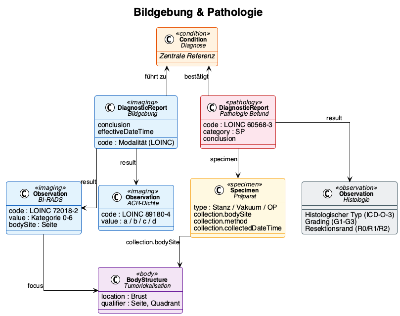

Senologie Core Dataset
0.10.0 -
Kerndatensatz Senologie - Local Development build (v0.10.0) built by the FHIR (HL7® FHIR® Standard) Build Tools. See the Directory of published versions

Imaging and pathology provide the diagnostic foundation for staging and treatment decisions. Although both disciplines work with well-established classification systems (BI-RADS, TNM, Allred score), their results originate from specialised subsystems that have rarely delivered findings in a uniformly structured, machine-readable format. Looking ahead, technical standards such as the HL7 Europe Imaging Study Report or the MII Pathology specification can serve as a bridge — provided that the relevant professional societies endorse the required content definitions and terminologies.
Until then, clinical documentation takes on the role of structuring: clinicians select standardised categories, capture defined data points, and thereby enable the transformation into an interoperable data model.
| Modality | Clinical question | LOINC Code | SNOMED CT |
|---|---|---|---|
| Bilateral mammography | Screening, work-up | 24606-6 | 71651007 |
| Bilateral ultrasound | Supplementary, interventional | 24590-2 | 16310003 |
| Breast MRI | Pre-operative, high-risk | 24589-4 | 241615005 |
| Bone scintigraphy | Staging distant metastases | 39638-7 | 44491008 |
| CT thorax/abdomen | Staging | 24627-2 | 77477000 |
Imaging findings are represented as a DiagnosticReport with associated Observations:
Laterality is represented via a BodyStructure resource encoding side (left/right), quadrant, and clock-face position where applicable. For bilateral examinations it must be unambiguously clear which finding relates to which breast.
| Type | Material | SNOMED CT | Context |
|---|---|---|---|
| Core needle biopsy | Core-needle | 122737001 | Pre-operative, diagnostic confirmation |
| Vacuum-assisted biopsy | Vacuum-assisted | 450614001 | Microcalcifications, small lesions, stereotactic |
| Surgical specimen | Excision / mastectomy | 122548005 | Post-operative, definitive histology |
| Re-excision specimen | Re-excision | 122548005 | R1 margin situation |
The pathology report is represented as a DiagnosticReport (profile: MII Pathology Report):
| Data point | FHIR element | Coding |
|---|---|---|
| Histological type | Observation.code | ICD-O-3 morphology |
| Grading | Observation.value | LOINC 33732-9, Nottingham G1–G3 |
| ER receptor | Observation (MII Onko) | LOINC 16112-5, IRS 0–12 |
| PR receptor | Observation (MII Onko) | LOINC 16113-3, IRS 0–12 |
| HER2 status | Observation (MII Onko) | LOINC 48676-1, IHC 0/1+/2+/3+ |
| Ki-67 | Observation | LOINC 29593-1, percent |
| Resection margin | Observation | R0/R1/R2/RX (MII Onko residual status) |
Although no normative standard for a structured pathology report in breast cancer care currently exists, the Breast Cancer Pathology Specification demonstrates through concrete examples how a FHIR-based pathology report can look in the breast cancer context.
The typical workflow from imaging to treatment decision:
Each step produces FHIR resources that reference one another: DiagnosticReport references Specimen and Observations, which in turn reference the Condition (diagnosis).
| Type | Resource |
|---|---|
| Profile | Senologie_Bildgebung_Befund |
| Profile | Senologie_Bildgebung_Observation |
| Profile | Senologie_Tumorlokalisation |
| Profile | Senologie_Pathologie_Befund |
| Profile | Senologie_Pathologie_Praeparat |
| Questionnaire | Imaging |
| Questionnaire | Pathology |
| Example | Case 1 — Mammography |
| Example | Case 1 — Pathology |
| Example | Case 1 — BI-RADS |